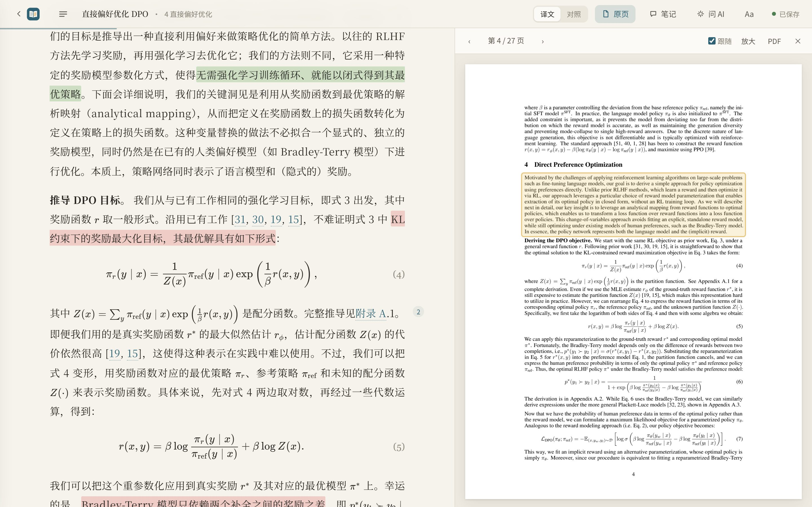
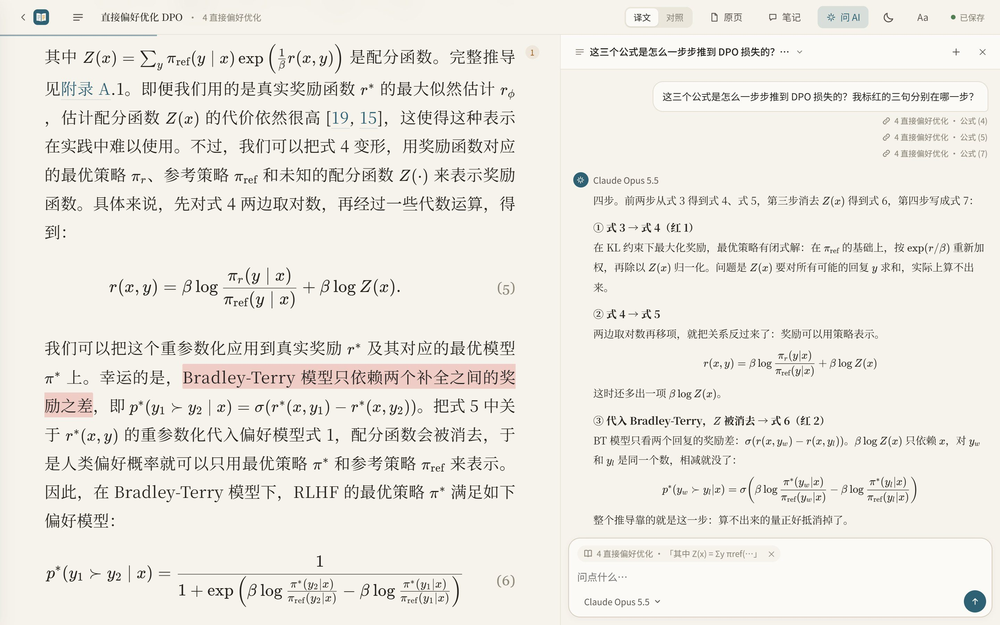
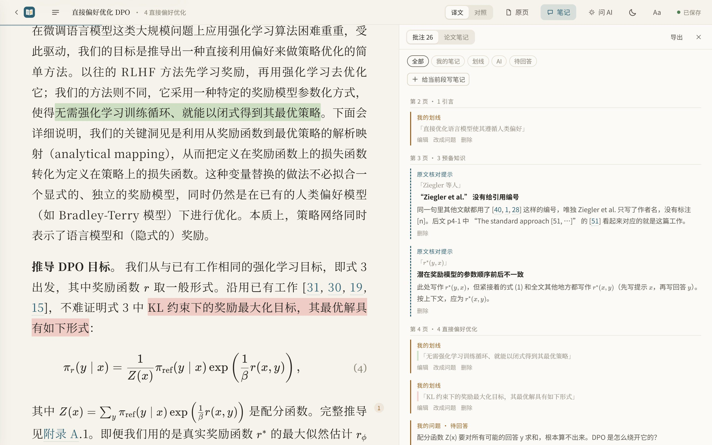
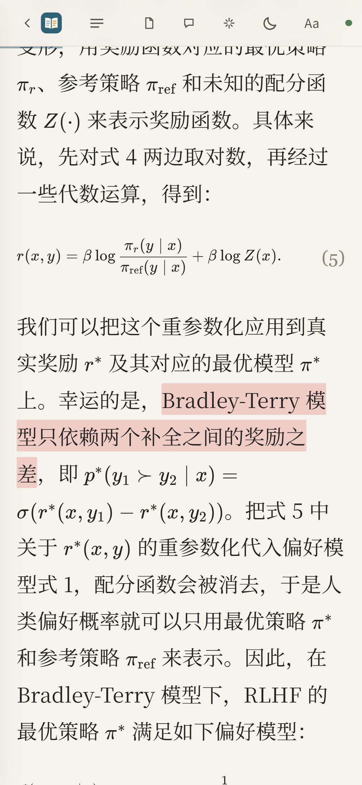

问 AI：引用几段，一起问
选中正文拖进输入框，或者点段落上的“问 AI”，每段一个小标签。问题会带上这几段和你正在读的上下文。
你做过的标记不会每次都塞给模型；问到“标红的”“划线”“我的笔记”时，才按颜色找出来。
“我标红的那几句话分别对应哪个公式？”演示里有这样一段真实的对话，可以打开看。
导入 PDF，用你已经在用的 Claude Code、Codex，或者免费模型，在后台逐页翻译。公式、表格照原文排好，随时对照原页，边读边划线、记笔记、问 AI。
开源免费 · 本地运行，支持自选网盘同步文献库

翻译软件给你一堆断行的文字；EasyRead 给你一本排好版、能批注、能随时追问的中文论文。
宋体正文、舒服的行宽，公式用 KaTeX 按原文重排，表格是三线表，参考文献保留原文。
一键切“对照”，每段下附英文；右侧开原页，跟着阅读位置翻页，框出当前段落。
正文只放忠实的译文；AI 的解释、发现的原文笔误放在页边，一眼分清哪句是论文说的。
可以一次引用好几段来问；问“我标红的那些”，它会找出你红色的划线一起看。
四色荧光笔或下划线；笔记里的问题一键让 AI 回答。全部按原文顺序汇总，可导出 Markdown。
拖进任何 PDF；或填 arXiv 编号、DOI、论文标题、OpenReview / ACL / bioRxiv 链接，自动找 PDF、补全信息。
选中正文拖进输入框，或者点段落上的“问 AI”，每段一个小标签。问题会带上这几段和你正在读的上下文。
你做过的标记不会每次都塞给模型；问到“标红的”“划线”“我的笔记”时，才按颜色找出来。

右侧原页跟着你读到的位置翻页，并框出这一段在 PDF 里的位置。公式、表格有疑问，扫一眼就能核对。
整篇还有一页“论文笔记”。勾选要哪些，导出成 Markdown，放进 Obsidian、Notion。

论文和分类都能置顶；自己建分类，把论文拖进去；最近阅读、星标、阅读进度一目了然；复制 GB/T 7714、APA、BibTeX 引用；导出单文件离线网页发给别人；删掉的论文先进回收站。

导出的离线网页和这个在线演示都适配手机：通勤路上接着读，划线照样能用。

设置里会自动检测本机装了什么，点“试译一句”马上知道能不能用。某一页失败会自动重试，额度用完就停下，等恢复后接着译。每次翻译用了多少 token 都有记录；用 Claude 订阅时还能看到 5 小时额度用到多少。
| 来源 | 要什么 | 说明 |
|---|---|---|
| Claude Code推荐 | 装好并登录 Claude Code | 不用 Key，用你订阅的额度；会看原页图核对公式，译得最好 |
| Codex CLI | 装好并登录 Codex | 不用 Key，用 ChatGPT 账号 |
| Grok Build / Antigravity CLI / Cursor CLI | 装好并登录其中一个 | 不用 Key，用各自的订阅；模型名自己填，留空用它的默认 |
| API 接口 · 国内直连 | API Key | DeepSeek、智谱、阿里云百炼、Kimi、硅基流动、魔搭。智谱 GLM-4.7-Flash、硅基流动小模型免费；DeepSeek 一篇 20 页论文几毛钱 |
| API 接口 · 海外 | API Key（国内要开梯子） | OpenAI、Anthropic、Gemini、OpenRouter、Groq、Cerebras；后四家有免费额度 |
| API 接口 · 本机免费 | 装好 Ollama 或 LM Studio | 完全离线，推荐 qwen3.5:9b（显卡小用 4b） |
| API 接口 · 自定义地址 | 地址 + Key | 任意 OpenAI 兼容接口、中转站；点“获取模型列表”直接拉模型名 |
最省事是下载安装包，不用装 Python：Windows、macOS（Apple 芯片）、Linux 都有。
在 Releases 下载 Windows 的 .exe、macOS 的 .dmg 或 Linux 的 .AppImage，装好打开就是独立窗口。也可以从源码运行（要 Python 3.10+）。
右上角“设置”，选 Claude Code、Codex CLI 或 API 接口（DeepSeek、智谱、本机 Ollama……），点“试译一句”确认能用。
把 PDF 拖进窗口，或粘贴 arXiv 编号、论文链接。已译的页马上能读，没译到的先显示原页。
提示“无法验证开发者”或“Apple 无法验证是否包含恶意软件”：先点“完成”（不要点“移到废纸篓”），打开“系统设置 → 隐私与安全性”，向下找到安全性提示，点“仍要打开”；在确认窗口点“打开”，按提示输入登录密码或使用 Touch ID
提示“已损坏，无法打开”：先从 EasyRead 官方 Releases 重新下载，并把应用拖进“应用程序”；文件也可能确实损坏或被改动，不能只凭这条提示判断原因。只有确认文件来自这个官方仓库、并信任该文件后，才在“终端”执行下面的命令，再重新打开 EasyRead；这条命令移除隔离属性，不会修复损坏的文件
xattr -dr com.apple.quarantine /Applications/EasyRead.app为什么会出现验证提示：目前的 macOS 安装包只做了临时签名，没有 Apple 开发者证书，也没有经过公证，因此可能被系统拦截；代码完全开源，也可以从源码运行
如果系统提示“将损坏你的电脑”，或明确检测出恶意软件并要求移到废纸篓，请停止安装，不要用上面的步骤绕过；按 Apple 官方说明处理
需要 Python 3.10+；从 Releases 下载源码 zip 并解压，Windows 双击 start.cmd，macOS / Linux 在解压目录里运行 ./start.sh；也可以用 pip：
pip install git+https://github.com/Edwardxlai/easyread
easyread整篇翻译默认超过 60 页时会先确认，可以选择全部翻译、只译前 60 页或先不译；上限在“设置 → 模型”里修改，填 0 表示不询问
能，论文列表和分类支持批量复制或保存 GB/T 7714、APA、BibTeX 引用；缺少作者、年份等信息时会提示补齐
能，目前支持中文、日语、韩语、西班牙语、法语和德语，默认译成中文。在“设置 → 阅读 → 论文译成”里修改默认语言，也可以在导入时单独选择；还可以直接读英文原文。界面语言独立设置，目前支持中文和英文
EasyRead 本身免费开源。翻译用的是你自己的模型：Claude Code / Codex 用你已有的订阅额度；API 接口里标“免费”的模型和本机 Ollama 不花钱，其他按量计费，DeepSeek 一篇 20 页论文几毛钱。
和你平时在终端里用 claude 一样：平时要，这里也要。不想折腾的话，在设置的“API 接口”里选智谱、硅基流动（都有免费模型），或者本机 Ollama，国内直连。
默认保存在本机，每篇论文一个文件夹。在“设置 → 云文献库”里可以迁移到其他磁盘或网盘同步文件夹，上传和同步由你自己的网盘客户端完成；翻译和提问时，相关内容会发给你选择的模型
能。文献库里右键一篇论文 → “导出离线 HTML”，得到一个单文件网页，对方双击用浏览器打开就能读：译文、公式、原页图、你的划线和笔记都在里面。原页图打包在文件里，所以不小（27 页的论文约 10 MB）。
会存在你自己的浏览器里，别人看不到。演示不能导入新论文、不能提问；装到本机后才有完整功能。